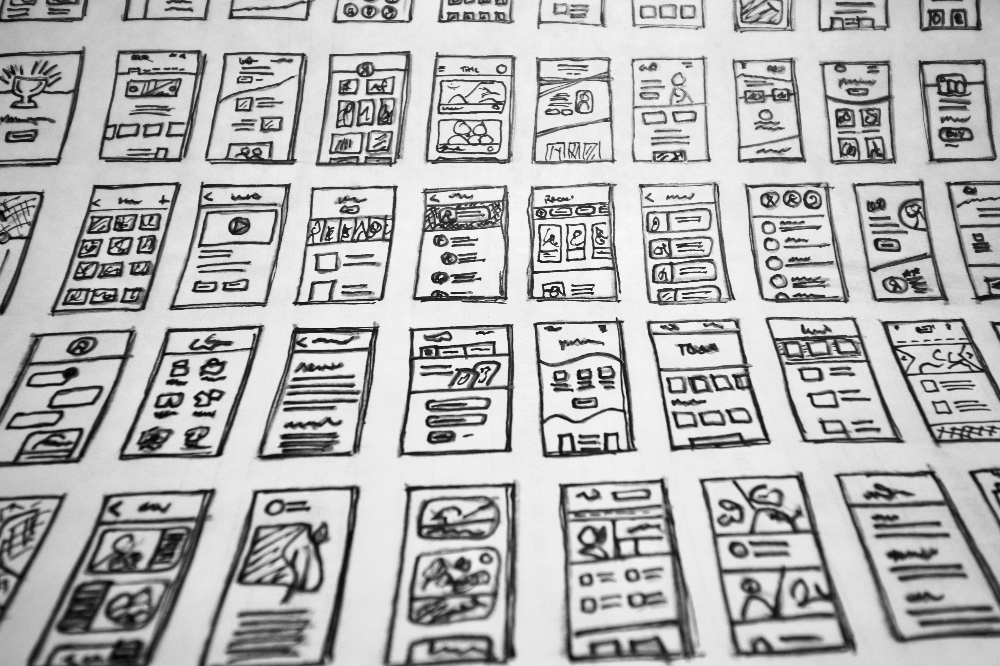

an insight into my design process

doing research before design, why it is a must
this article is a brief on the important uses of how research contributes to a major part of getting the product right. before designing a product, one must attend to the basic question - what is the problem and does it solve the problem? we'll be looking at various examples of how research can be done and how lack of it can affect the end result.

heuristic evaluation: ten rules
when evaluating a new application, there are a set of rules available to compare. neilson and norman group has provided us with ten checks to fully compare existing applications and evaluate on how usauble and accessible they are. for beginners, these come extremely handy as starting points for any research efforts.